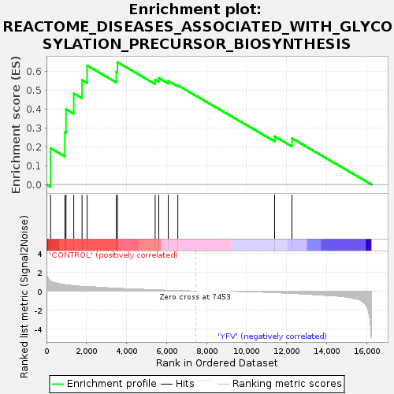
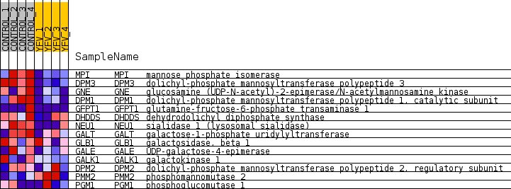
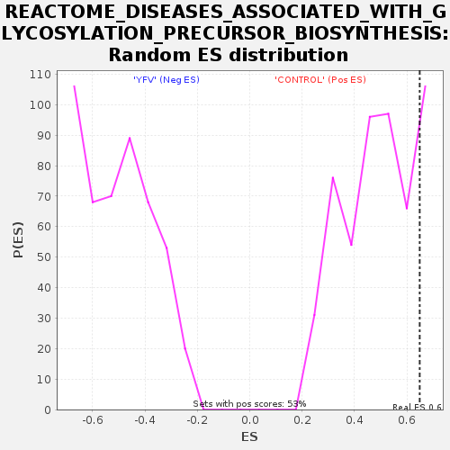

| Dataset | MATRIZ_GSE99081_collapsed_to_symbols.gsea_CLASE_99081.cls#CONTROL_versus_YFV |
| Phenotype | gsea_CLASE_99081.cls#CONTROL_versus_YFV |
| Upregulated in class | CONTROL |
| GeneSet | REACTOME_DISEASES_ASSOCIATED_WITH_GLYCOSYLATION_PRECURSOR_BIOSYNTHESIS |
| Enrichment Score (ES) | 0.6493439 |
| Normalized Enrichment Score (NES) | 1.328266 |
| Nominal p-value | 0.1444867 |
| FDR q-value | 0.97391003 |
| FWER p-Value | 1.0 |

| SYMBOL | TITLE | RANK IN GENE LIST | RANK METRIC SCORE | RUNNING ES | CORE ENRICHMENT | |
|---|---|---|---|---|---|---|
| 1 | MPI | mannose phosphate isomerase | 204 | 1.062 | 0.1925 | Yes |
| 2 | DPM3 | dolichyl-phosphate mannosyltransferase polypeptide 3 | 920 | 0.669 | 0.2775 | Yes |
| 3 | GNE | glucosamine (UDP-N-acetyl)-2-epimerase/N-acetylmannosamine kinase | 975 | 0.650 | 0.3997 | Yes |
| 4 | DPM1 | dolichyl-phosphate mannosyltransferase polypeptide 1, catalytic subunit | 1363 | 0.558 | 0.4836 | Yes |
| 5 | GFPT1 | glutamine-fructose-6-phosphate transaminase 1 | 1777 | 0.500 | 0.5547 | Yes |
| 6 | DHDDS | dehydrodolichyl diphosphate synthase | 2032 | 0.479 | 0.6316 | Yes |
| 7 | NEU1 | sialidase 1 (lysosomal sialidase) | 3491 | 0.290 | 0.5977 | Yes |
| 8 | GALT | galactose-1-phosphate uridylyltransferase | 3545 | 0.284 | 0.6493 | Yes |
| 9 | GLB1 | galactosidase, beta 1 | 5430 | 0.119 | 0.5561 | No |
| 10 | GALE | UDP-galactose-4-epimerase | 5612 | 0.105 | 0.5653 | No |
| 11 | GALK1 | galactokinase 1 | 6087 | 0.069 | 0.5495 | No |
| 12 | DPM2 | dolichyl-phosphate mannosyltransferase polypeptide 2, regulatory subunit | 6562 | 0.034 | 0.5269 | No |
| 13 | PMM2 | phosphomannomutase 2 | 11400 | -0.139 | 0.2556 | No |
| 14 | PGM1 | phosphoglucomutase 1 | 12265 | -0.221 | 0.2449 | No |

